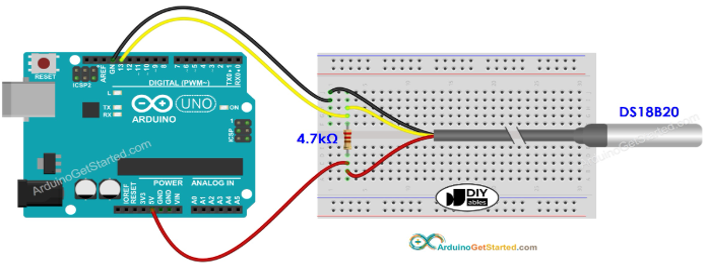

DS18B20 Temperature Sensor Setup
The DS18B20 is a digital 1-Wire temperature sensor that delivers accurate readings from -55 °C to +125 °C using only one data line. The notes below walk through the wiring, required Arduino libraries, and a sample sketch that streams readings to the Serial Monitor every 0.5 seconds.
Hardware Overview
Pinout
| DS18B20 Pin | Function | Connect to on Arduino |
|---|---|---|
| VCC | 3.0–5.5 V supply | 5 V (or 3.3 V if using a 3.3 V board) |
| GND | Ground | GND |
| DQ | Data line | Any digital pin (example uses D2) |

Note
Keep a 4.7 kΩ pull-up resistor between DQ and VCC. Without it the sensor will intermittently report -127 °C or 85 °C because the 1-Wire bus floats.
Wiring Steps
- Place the DS18B20 so you can identify the flat face—pins read left to right as
VCC,DQ,GND. - Connect
VCCof DS18B20 to the Arduino 5 V pin (or 3.3 V on 3.3 V boards) andGNDto Arduino GND. - Connect
DQof DS18B20 to digital pinD13(change the pin in the sketch if you use a different one). - Insert a 4.7 kΩ resistor between
DQandVCCas close to the sensor as possible.

Software Setup
Install Required Libraries
Follow the following steps to install DallasTemperature and OneWire
- Open the Arduino IDE.
- Navigate to
Sketch → Include Library → Manage Libraries…. - Search for DallasTemperature.
- Select version 3.9.0 and click Install. Accept the prompt to install the dependency OneWire.
Example Sketch
Create a new sketch and paste the code below. Change ONE_WIRE_BUS if you wired the sensor to a different digital pin.
/*
* Created by ArduinoGetStarted.com
*
* This example code is in the public domain
*
* Tutorial page: https://arduinogetstarted.com/tutorials/arduino-temperature-sensor
*/
#include <OneWire.h>
#include <DallasTemperature.h>
const int SENSOR_PIN = 13; // Arduino pin connected to DS18B20 sensor's DQ pin
OneWire oneWire(SENSOR_PIN); // setup a oneWire instance
DallasTemperature tempSensor(&oneWire); // pass oneWire to DallasTemperature library
float tempCelsius; // temperature in Celsius
float tempFahrenheit; // temperature in Fahrenheit
void setup()
{
Serial.begin(9600); // initialize serial
tempSensor.begin(); // initialize the sensor
}
void loop()
{
tempSensor.requestTemperatures(); // send the command to get temperatures
tempCelsius = tempSensor.getTempCByIndex(0); // read temperature in Celsius
tempFahrenheit = tempCelsius * 9 / 5 + 32; // convert Celsius to Fahrenheit
Serial.print("Temperature: ");
Serial.print(tempCelsius); // print the temperature in Celsius
Serial.print("°C");
Serial.print(" ~ "); // separator between Celsius and Fahrenheit
Serial.print(tempFahrenheit); // print the temperature in Fahrenheit
Serial.println("°F");
delay(500);
}
Reading Temperature Using the Serial Monitor
- Connect the Arduino over USB and select the board/port under
Tools → BoardandTools → Port. - Upload the sketch (
Sketch → Upload). - Open
Tools → Serial Monitor, set the baud rate to 9600, and observe the temperature updates every 500 ms. - Dip the probe in hot/cold water or pinch it between your fingers—the displayed value should track the change within a second.
Troubleshooting
- Reading stays at -127 °C or 85 °C – The sensor is not detected. Re-check the pull-up resistor, cable continuity, and pin assignments.
- Serial Monitor is blank – Make sure the baud rate is 9600 and that the correct USB/serial port is selected.
- Values jump erratically – Use shorter leads, add shielding/ground, or move the pull-up resistor closer to the sensor to clean up the 1-Wire bus.
- Upload fails – Close other serial terminals and confirm the board/port settings.